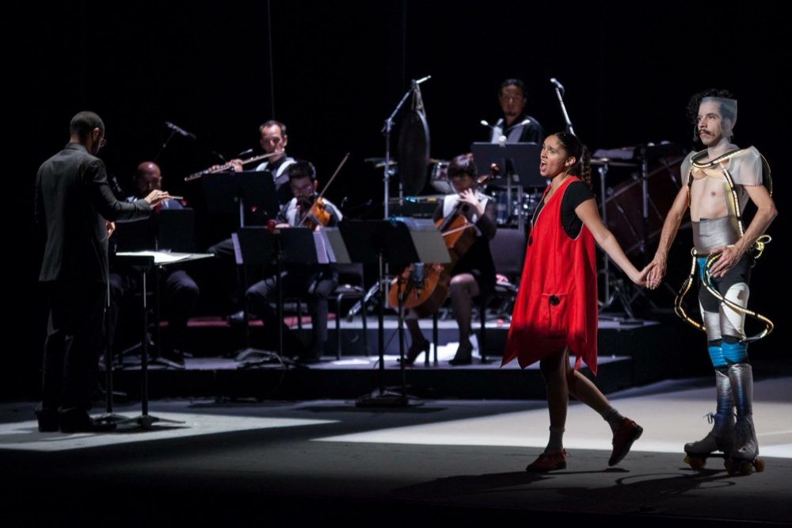
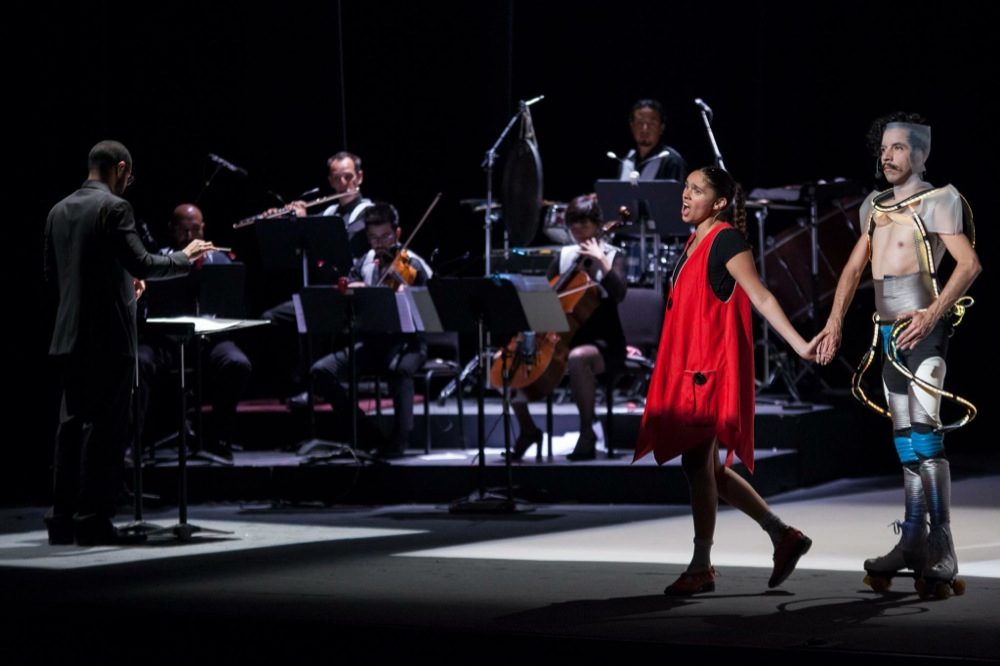

Ópera Portátil
Ópera portátil es una compañía independiente de ópera y teatro fundada en 2011 por Catalina Pereda, dedicada a la creación, producción y difusión de la música y ópera contemporánea. Con más de veinte integrantes entre los que destacan los compositores José Miguel Delgado y Marcela Rodríguez. Ópera portátil cuenta en su catálogo con tres obras músico-teatrales y cinco óperas de cámara contemporáneas mexicanas, que se han presentado en foros como el Palacio de Bellas Artes, el Teatro de la Ciudad Esperanza Iris, el Julio Castillo, el Galeón, la sala Xavier Villaurrutia, el Teatro de las Artes, el Foro Sor Juana, el Juan Ruiz de Alarcón, La Capilla, el Forum León, el Teatro Cervantes, Teatro Ocampo, entre otros.
Entre sus obras se encuentran las óperas infantiles Las luciérnagas no vuelan (2019), El día que María perdió la voz de Marcela Rodríguez con libreto de Javier Peñalosa (2016) y Apoidea. Breve ópera hexagonal de José Miguel Delgado (2014), las dos últimas dirigidas por Jesusa Rodríguez. Apoidea ha tenido más de 100 representaciones en múltiples foros de la Ciudad de México y el interior de la República, es la ópera contemporánea mexicana con más representaciones en el país.
Otras de las obras creadas, producidas y llevadas a escena por Ópera portátil son Las cartas de Frida (2013), ópera de toilette de Marcela Rodríguez sobre las cartas inéditas de Frida Kahlo, La extraña, pieza operística teatral (2019), Diálogos en soledad. Un monodrama (2015) una investigación sobre el papel de las mujeres en la ópera que le valió a Catalina Pereda el primer doctorado en canto en el país, por la UNAM. La segunda parte de esta obra Diálogos en soledad de mujeres inconvenientes, fue estrenada en el Teatro el Galeón del 2019, y es una ópera-cabaret para 8 cantantes y una pianista.
La compañía ha tenido apoyos del FONCA, del INBA, del Festival de México en el Centro Histórico, del Festival Internacional Cervantino, de Conaculta, de la Secretaría de Cultura y de la Secretaría de Relaciones Exteriores. Actualmente es beneficiara del programa México en Escena, 2019-2021.
Espectáculos
Las cartas de Frida
Ópera de toilette

Diálogos en soledad
Un monodrama operístico

El día que María perdió la voz
Ópera infantil para saber escuchar
Quienes somos
Pedro Antonio García Álvarez
Dramaturgo
Kaoru Miyasaka
Percusionista
Rodrigo Cadet
Director musical
Katia Castañeda
Directora y actriz
Alejandro Camacho M.
Actor y productor
Braulio Amadís
Escenógrafo e iluminación
Carlos Brown
Actor y diseñador de vestuario
Ignacio Sotelo
Ingeniero de sonido y multimedia
Mike de Brie
Ingeniero de sonido y multimedia
Carlos Haroldo de León Álvarez
Violín
Vincent Touzet
Flauta
Mariana Chávez-Lara
Flauta
Nataila Pérez Turner
Cello
Edwin Tovar Vázquez
Percusionista
Guillermo Eisner
Compositor
Raúl Román
Cantante
Ricardo Estrada
Cantante
Pablo Ramírez
Clarinete
Benjamín Macías
Diseñador gráfico
Charles Philip Daniels Torres
Percusionista y compositor
Analí Sánchez Neri
Pianista y compositora
Nicolás Pereda
Video y multimedia
Javier Peñalosa
Libretista
Funciones
-
Titus
Miércoles 6 y Jueves 7 de
Diciembre 2017, 20:30 hrsTeatro Helénico
-
Las cartas de Frida
Nueva versión.
Temporada de 12 funciones todos los martes y miércoles 20:30 hrs, del martes 6 de febrero al miércoles 15 de marzo, 2018Teatro Helénico
-
El d√≠a que María perdió la voz
Temporada de Teatro Escolar
(INBA-SEP)
Del 1 al 26 de marzo, 2018Teatro El Galeón, Centro Cultural del Bosque
-
Diálogos en soledad de mujeres inconvenientes
Temporada de 12 funciones, todos los jueves del 12 de abril al 28 de junio, 2018
Foro A Poco No, Sistema de Teatros CDMX
-
Las luciérnagas no vuelan
Estreno: 16 de marzo, 2019
Teatro El Granero Xavier Rojas (CCB)
Función especial: 23 de marzo, 2019
12 Gran Maratón de Teatro para Niñas, Niños y Jóvenes; Teatro El Granero Xavier Rojas (CCB)
Funciones:
17 y 24 de marzo 2019
6, 7, 13, 14, 20, 21, 27 y 28 de abril 2019
4, 11, 12, 18, 19, 25 y 26 de mayo 2019
1 y 2 de junio 2019Teatro El Granero Xavier Rojas (CCB)
Función espacial: 22 de septiembre, 2019
Teatro Ángela Peralta, San Miguel de Allende, Guanajuato
Re-estreno: 5, 6, 12, 13, 19, 20, 26, 27 de ocutbre, 2019
Foro José Solé (ISSSTE)
Funciones adicionales: 23 y 24 de noviembre, 2019
Foro José Solé (ISSSTE)


 
